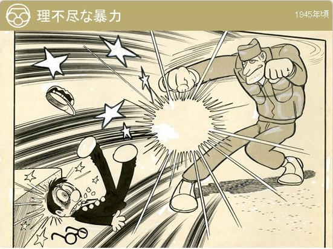

あれから五十年過ぎ去った今、私も八十才を越え、どうにか がんばっている今日この頃です。
思い出せば色々ありますが、先ず話は、大東亜戦争に始まり、本土空襲のB29も毎日の様、二〇年三月九日の夜は下町一帯は火の海と化し家は丸焼け、死体が道路にゴロゴロ、そこを家なき人々が地方へと両国橋を渡る避難民の行列がいつまでも続いていた。
その中に小さな子供が泣きながら 親は荷物を背に、 それを見て私はホロリ涙した。
私もこれはと思い、妻子を田舎へ疎開させました。
続いて三月二十日頃に衣類や箪笥などリヤカーに積み自転車で、池袋要町より埼玉美里町迄、途中上尾の知人宅に一泊、翌日熊谷を過ぎた頃に日は暮れ、疲れが出てリヤカー上で一休み。
田舎の家に着いた時は白々と夜が明ける頃でした。
帰りの途中、艦載機の低空よりの機銃掃射に遭い、あわてて林の中へ駆け込みました。 もし林がなかったらと今考えるとゾーッとします。 又よくもリヤカーで美里迄行けたと思います。
続いて四月十三日夜の山手方面一帯の空襲では、私の住んでいた豊島要町の隣組にも焼夷弾が雨の如く落ちた。
同じ隣組の今は亡き芸能人”ハナ肇”(本名 野々山定雄)さんと共に消火に努めたが、三月の下町空襲で焼死者が多かったことを恐れて皆逃げたためかどうにもならず、私も防火用水の水を頭から三・四杯かぶり火の中をくぐりぬけ逃げました。
火も下火になった頃は夜も明け、高い所へ登って見れば遠く一面燃えていた。
朝 家に帰れば我が家は焼け、柱だけ残っていた。
皮肉なことに疎開して空き家同然の隣家はそのまま焼け残っていました。
申し訳ないがしばしの間 お借りして住むことに。
たまたま姉の家も焼け、姉は秋田に行き甥子と二人で銃後の守りを。
八月十五日 天皇陛下のお言葉を馬喰町の花王本社の焼けビルで聞いた。 残念の一言で言葉も出なかった。
翌年二月ニ十ー日 帝銀事件がありました。 敗戦後の日本は物資もなく暗い時代で、進駐軍が思うがままに暴れた。 帝銀事件のあった翌日のこと、勤め帰りの私は、家もまばらな池袋からの焼跡の暗い道で イキナリ米兵二人に後から襲われました。 私が小さいので、女と思ったのかそれとも男と思ったのか。 軍靴で蹴るやらボクシングそのもの めった打ちに。 死んだようにその場に倒れた私を見て、見張り役をあわせ三人の米兵は一目散に逃げ去った。 私は、苦しさをこらえ やっとのことで家にたどりつきました。
家に帰って見れば顔は、目 鼻 口と言わずオーバーまでも血だらけ。 あの時の米兵は池袋の町で女に振られたのかも。
当時の我が家は、戦後第一回の都営住宅に当たった家で、物のない時期のため、屋根はルーヒング、家の周囲は一枚板張り、水道は共同水道でした。 しかし近所の皆さんは皆良い方ばかり。 私が、大怪我と聞くと皆来て下さって大騒ぎ。 私は苦しくて息をするのも大変な状態でした。 ただ家の中で子供の様にうめいているだけでした。 そのうちに内科医や接骨医の先生のところへ皆さんが走ってくれました。 診断の結果、筋肉のスジが何本か切れ骨折もしているため、息をしたりセキをする度に苦しかったのです。
会社も一ヶ月位休ませて頂きました。 後日、米軍将校の方が見えたが、暗がりのことで暴行した米兵の顔など判るはずはなく、そのままじまいでした。
戦中戦後いろいろなことがありましたが、 私も運が強いと申しますか 七転八起き お陰様にも今日までも生き長らえています。
帝銀事件1948年に東京都豊島区の帝国銀行（現在の三井住友銀行）椎名町支店でおきた銀行強盗殺人事件。
白腕章を着用し厚生省技官と名乗った男性が、「近くで集団赤痢が発生した。予防薬を飲んでもらいたい。」と青酸化合物を飲ませ銀行員ら12名を毒殺し、支店の金と小切手を奪い逃走した。
画家の平沢貞通が逮捕され死刑判決を受けたが、平沢は獄中で無実を主張し続け、刑が執行されないまま、1987年に95歳で獄死した。 戦後のGHQ占領下で起きた事件で、逮捕には謎が多く、未解決事件とされることもある。
進駐軍GHQの設置にともない、戦後の日本には連合国軍の兵士（おもに米兵）が多数進駐するようになった。 実質は占領軍だが、占領というイメージをやわらげるため、政府もマスコミも彼らを進駐軍と呼称した。

兵隊がぼくに何か訊ねた。
残念ながら「敵性語」ということで英語の勉強を中断されたっきりのぼくにとっては、まったくチンプンカンプンである。
「ホワット？ ホワット？」と訊き返すのがせいいっぱ…もう二度と、戦争なんか起こすまい、もう二度と、武器なんか持つまい、
孫子の代までこの体験を伝えよう。
「手塚治虫講演集」より引用: 手塚治虫オフィシャル 手塚治虫と戦争